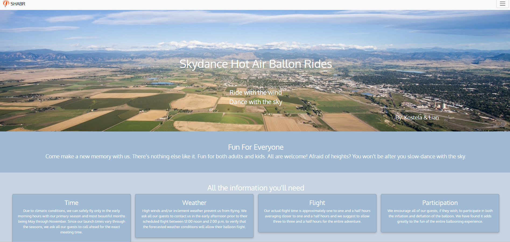

SHABR
Context
The SHABR project was a web development assignment where we used HTML, CSS, and Bootstrap to build a website for a fictional hot air balloon ride business. The goal was to turn raw content and images into a real, responsive website with a strong visual layout.Before building, we created a wireframe and a project plan (plan.md) to map out the structure, timeline, and tasks. This helped guide our development process and ensured that the final product was well-organized and complete.
Content
The SHABR website includes the following features:
- A welcoming homepage introducing the SHABR business
- A photo carousel showcasing hot air balloons
- A section for booking information and ride safety
- Customer testimonials and an FAQ section using Bootstrap accordion
- A responsive layout using Bootstrap’s grid system
- A navigation bar linking all major sections
We used:
- HTML to structure the content
- CSS to apply a custom color palette and fonts
- Bootstrap for responsiveness and components like carousel, navbar, and accordion
Challenges
- One challenge was organizing a lot of raw content into clear sections. The wireframe helped solve this by giving a visual structure before coding.
- Another difficulty was making sure the layout looked good on both mobile and desktop. Using Bootstrap’s grid system helped fix this.
- Styling the carousel and making it visually appealing took time and experimentation with custom CSS and spacing.
Takeaways
- Planning ahead with a wireframe and plan.md made coding much smoother.
- Bootstrap components are powerful, but combining them with custom CSS takes practice.
- Organizing raw content into user-friendly sections is just as important as the design.
- Keeping the layout responsive from the start is easier than fixing it later.
Link to the project
